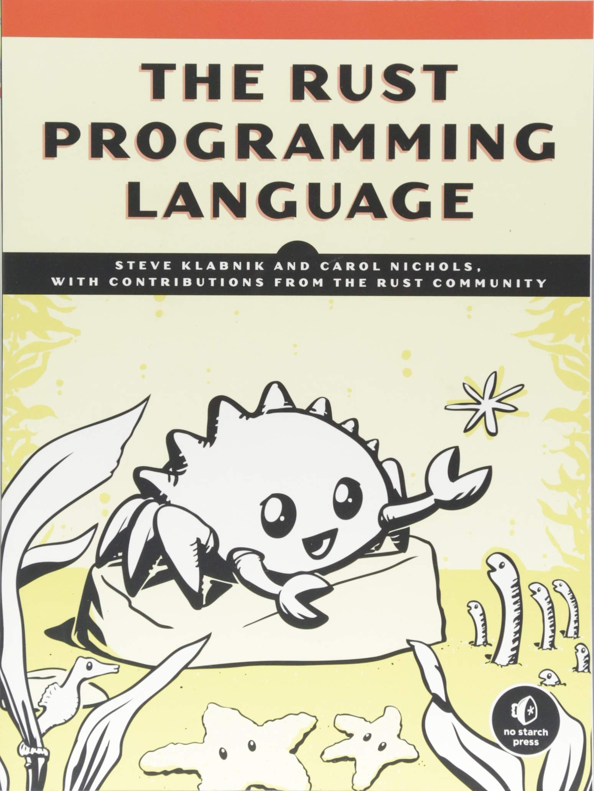

Notes: The Rust Programming Language by Steve Klabnik and Carol Nichols
Posted on September 12, 2018
by jcb

Contents
- Chapter 01: Getting Started
- Chapter 02: Programming a Guessing Game
- Chapter 03: Common Programming Concepts
- Chapter 04: Understanding Ownership
- Chapter 05: Using Structs to Structure Related Data
- Chapter 06: Enums and Pattern Matching
- Chapter 07: Packages, Crates, and Modules
- Chapter 08: Common Collections
- Chapter 09: Error Handling
- Chapter 10: Generic Types, Traits, and Lifetimes
- Chapter 11: Testing
- Chapter 12: An I/O Project: Building a Command Line Program
- Chapter 13: Functional Language Features: Iterators and Closures
- Chapter 14: More about Cargo and Crates.io
- Chapter 15: Smart Pointers
- Chapter 16: Fearless Concurrency
- Chapter 17: Object Oriented Programming Features of Rust
- Chapter 18: Patterns Match the Structure of Values
- Chapter 19: Advanced Features
- Chapter 20: Final Project
- Chapter 21: Appendix